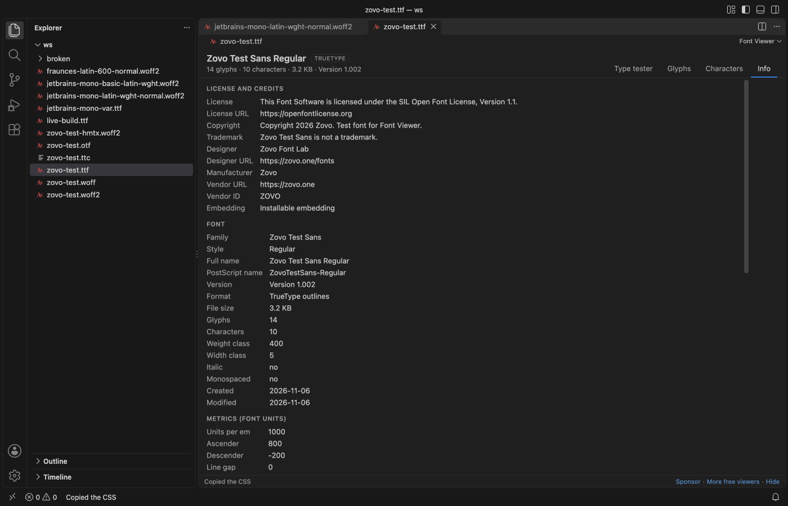

Open files in VS Code and Cursor / Developer files
Check the license and embedding rights of a font file
A font file carries its license text, copyright and an embedding setting, but no file manager shows them. Font Viewer opens TTF, OTF, WOFF, WOFF2 and TTC files in VS Code. Its Info tab lists the license, license URL, copyright, trademark, designer, vendor and the embedding rights, such as "Installable embedding" or "Restricted license embedding". Copy CSS gives a ready @font-face rule. All of that is free. Font Folder Report in Zovo Pro (USD 19 once) lists the license and embedding rights of every font in a folder, with 3 free tries.
Free, MIT license. Extension ID zovo.font-viewer-vscode, version 0.2.3. Needs VS Code 1.90.0 or newer.

Steps in VS Code
- Install Font Viewer from the Marketplace, or press Ctrl+P (Cmd+P on macOS) and run
ext install zovo.font-viewer-vscode. - Click the
.ttf,.otf,.woff,.woff2or.ttcfile in the Explorer. Font Viewer is the default editor for these files. - Open the Info tab. Under License and credits you see the license text, license URL, copyright, trademark, designer, manufacturer, vendor and the embedding setting.
- Read the Embedding line, which comes from the fsType field of the font. Installable embedding is the most open setting. Editable, Preview and print, and Restricted license embedding allow less, and a note such as "no subsetting" can follow.
- Compare the license text and URL with how you plan to use the font. The embedding setting is a flag from the maker, not the full license.
- To use the font on a web page, click Copy CSS on the Type tester tab, or right-click the font in the Explorer and pick "Copy CSS @font-face". The rule has
font-family,src,font-weight,font-style,font-display: swapand aunicode-range.
Where Zovo Pro saves time
Opening fonts, the Info tab, the type tester, the glyph grid, the character map and Copy CSS @font-face are free. Font Viewer is read-only, never changes the font and makes no network calls.
Before you ship a folder of fonts in an app or a website, you need the license of each one, not only the one you opened. Font Folder Report reads every font in a folder and its subfolders and writes one row per font with family, style, weight, axes, version, glyph count, license, license URL and embedding rights, as a CSV file or a Markdown table. The Markdown table ends with a list of the fonts with restricted embedding. It can also write one fonts.css with an @font-face rule per font. The other Pro tool is Convert Font, between TTF or OTF and WOFF2 or WOFF.
With Font Folder Report (Zovo Pro)
- Right-click a folder of fonts in the Explorer and pick "Font Folder Report: CSV, Markdown or @font-face CSS… (Pro)", or run it from the Command Palette.
- Pick CSV, Markdown table or CSS @font-face rules, then where to save the file.
- Open
fonts-report.csvorfonts-report.md. A try counts only when the file is written.
Font Folder Report works 3 times on your computer before it asks for a license, and a try counts only when you get a result. Opening a file shows no popup and no countdown.
Zovo Pro costs USD 19 once. It is not a subscription, and it turns on the Pro tools in every Zovo extension, not only Font Viewer. After a card payment (Stripe) your license key shows on the next page. In VS Code, run "Zovo Pro: Enter Zovo Pro license key" from the Command Palette and paste it. The key is checked on your computer, with no network call. With GitHub Sponsors, pick the "$19 one time" tier, then run "Zovo Pro: I already paid: unlock with GitHub Sponsors" and sign in with the same GitHub account. With PayPal, send USD 19 with "Zovo Pro" in the note and the key comes by email within a day.
A team of 5: USD 59 once, by card or by PayPal. Every rule and every Pro tool is on the Zovo Pro page.
Steps in Cursor, Windsurf or VSCodium
- Open the Extensions view with Ctrl+Shift+X (Cmd+Shift+X on macOS).
- Search for
zovo.font-viewer-vscodeand click Install. Cursor, Windsurf and VSCodium install from Open VSX, where it is published aszovo/font-viewer-vscode. - If your editor has no gallery, download the .vsix from the Open VSX page and run "Extensions: Install from VSIX...".
- Then use it the same way as in VS Code.
What Font Viewer handles
- TTF and OTF fonts, also variable fonts.
- WOFF and WOFF2 web fonts.
- TTC and OTC collections, with a list to pick the face.
- License fields from the name table and the embedding flags from the OS/2 table.
What it does not do
- The Info tab shows what the font file says. A font with no license fields shows "No license fields in the name table", and the real license may be in a separate file.
- The embedding setting is not a legal check. Read the license itself before you ship a font.
- WOFF2 collections, SVG fonts,
.dfontand Type 1 fonts are not supported. - Files over 64 MB show a message instead of opening (setting
fontViewer.maxFileMB).
Other options
- FontDrop!. A free web page that shows the glyphs and the name table of a font you drop into the browser.
- fontTools. A free Python library.
ttx -t name -t OS/2 font.ttfwrites the name table and the fsType field to an XML file.
Install counts and Open VSX status were checked on 13 November 2026. Descriptions in quotes are the extensions' own.
Questions
What does Installable embedding mean?
It is the most open fsType setting. The font may be embedded in documents and installed on the reader's computer. The license can still limit web or app use, so read it too.
Can I check many fonts at once?
Yes, with Font Folder Report (Zovo Pro). It writes the license and embedding rights of every font in a folder to a CSV file or a Markdown table.
Do I have to install the font?
No. Font Viewer reads the file and shows it only inside its tab.
Does it work in Cursor or Windsurf?
Yes. Cursor, Windsurf and VSCodium install extensions from Open VSX. Search for the extension in their Extensions view and install it there.
More about Font Viewer
Read the Font Viewer page for every feature and setting, or the source code on GitHub.
Related guides
- Font Viewer, TTF & WOFF Viewer on the VS Code Marketplace (also on Open VSX). Previews TTF, OTF and WOFF fonts in VS Code.
- TTF to WOFF2 in VS Code
- Preview a font file in VS Code
- Test a variable font and its OpenType features
- Read a HAR file offline in VS Code
Support this work
If this extension saves you time, you can support the work on GitHub Sponsors. Monthly tiers start at $5, and one-time tiers start at $15. Sponsorship is optional, and the tool works the same without it.
Need your format supported?
Open a format request with a sample file, and I reply there whether it can be done. For USD 299 once, through this GitHub Sponsors tier, I add your file format or a missing feature to this extension, with tests, within 7 days.